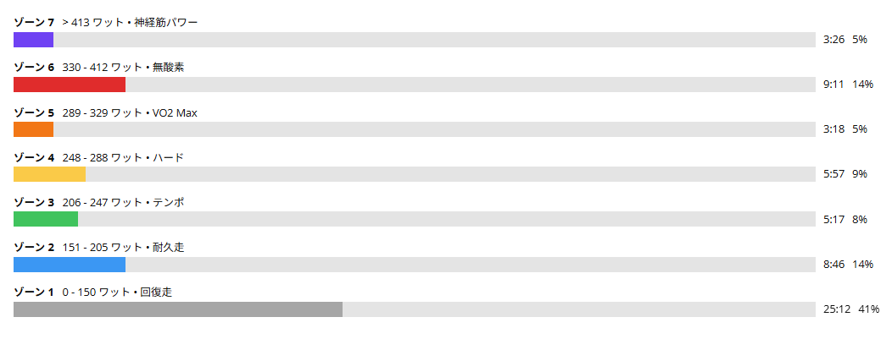

60秒ON／30秒OFF。2セット目からちゃんと苦しくなった
今日は唐沢で、初めて60秒ON／30秒OFFのインターバルを試してきた。少し前に30秒ON／30秒OFFをやったときは、TSSが100を超えているのに体感はかなり余裕があった。出力を上げたところでOFFに入ってしまう感じが強く、唐沢の地形とも噛み合っていなかった。
一度は60秒ON／60秒OFFも考えたが、友人と話して「60秒休むと回復しすぎるのでは」という話になった。それなら60秒踏んで、休みは30秒。結論から言うと、これがかなり良かった。1セット目の終わりでは「まだ余裕あるな」と思っていたのに、2セット目からはちゃんときつい。30/30のときの「これで合っているのか？」という物足りなさとは、明らかに違った。

24.03km・NP262W・TSS91.8
- 全体24.03km / 1時間01分22秒 / 獲得436m
- 負荷平均183W / NP262W / IF0.952 / TSS91.8 / 最大712W / 20分最大218W
- 心拍・回転平均126bpm / 最大165bpm / 平均84rpm
- 環境平均24.4℃ / 最高27.0℃ / 推定発汗684ml
- 効果有酸素TE3.0 / 無酸素TE0.6
全体で1時間ほど、TSSは91.8。前回の30/30（TSS101.4）より数字そのものは低い。それなのに体感は、明らかにこちらの方が高強度インターバルらしかった。これもTSSだけでは練習の中身を判断できない例だと思う。
1登坂でON4本、下山がセット間レスト
今後の比較用に、今回の構成も残しておく。1回の登りでONを4本前後、頂上まで行ったら下山をそのままセット間レストに使い、もう一度登って2セット目。これが今回の形である。
- 1セット目381W → 392W → 378W → 393W（ONはいずれも1分01秒）
- 1セット目のOFF172W / 185W / 74W（各30秒前後）
- セット間レスト2分53秒 / 19W（下山）
- 2セット目387W → 366W → 386W → 最終1分29秒386W
- 2セット目のOFF168W / 164W / 66W（各30秒前後）
最後だけは山頂までONを続けたので、1分29秒と長くなっている。今後は「1登坂でON4本前後」「下山をセット間レスト」「2登坂で2セット」「最後のONは山頂まで延長する場合あり」を、唐沢60/30の基本パターンとして使っていく。
初回なので、かなり上振れした
事前には360〜375Wくらいを考えていた。実際は381W、392W、378W、393W、387W、366W、386W、386W。ほとんどが380〜390W台である。
75kg基準なら5倍は375W。つまり今回は「普段あまり踏む機会のない5倍付近を、短時間でも繰り返す」という当初の目的にはかなり近い。ただし初回ということもあって、パワーは明らかに上振れした。次回から390W台を狙う必要はないと思う。むしろ370〜385Wくらいへ収めながら、後半まで同じ出力で並べられるかを見たい。最近のゴルビーでも感じているが、「とにかく高い数字を出す」より「狙った数字へ合わせる」方が、今は大事になってきた。
1セット目は余裕。2セット目から急にきつい
今回いちばん「これでよさそう」と思えたのがここだった。1セット目の最後では、まだ結構余裕があった。正直「これも意外といけるな」くらいの感覚である。
ところが下って2セット目に入ると話が変わった。明確にきつい。60秒のONに対してOFFは30秒しかないので、呼吸も脚も戻り切らないまま次のONが始まる。これを繰り返すと、2セット目では苦しさが少しずつ積み上がってくる。心拍も後半で上がり、最後は165bpmまで来た。30/30のときの「TSS100超えているのに全然ぬるい」という不思議な感じとは違って、今回は期待していた高強度インターバルらしい感覚になった。
ゾーン6以上が12分37秒
パワーゾーンはゾーン7が3分26秒、ゾーン6が9分11秒、ゾーン5が3分18秒。ゾーン6以上だけで12分37秒あった。全体1時間程度のライドとしては、高出力側にかなり時間を使っている。
30秒OFFと下山で回復する時間があるぶん、平均パワー183Wだけを見ても中身は分からない。それでもNPは262W、IF0.952。「短いONを繰り返す日」としては、かなり密度の高い内容になった。

OFFは揃えなくていい
OFF区間は172W、185W、74W、168W、164W、66Wとかなりバラバラである。ただ、ここは実走なので気にしない。
唐沢は勾配も変わるし、30秒で完全に一定の出力へ揃える必要もない。OFFの目的はトレーニングそのものではなく、次のONを成立させることだ。30秒間できるだけ力を抜いて、次の60秒でまた高い出力へ戻す。それでいい。ローラーのように完璧な矩形波を作ることより、実走で高出力を何度も再現できることを優先する。
最後は山頂まで、1分29秒・386W
- 最終ON1分29秒 / 386W / 心拍158〜165bpm / 91rpm
2セット目の最後は、山頂までそのままONを続けた。すでにそれなりに苦しくなっているところから約90秒を386W。今日のメニューが単に短い1分走の寄せ集めではなく、疲れた後にも高出力を維持する刺激になっていたことが分かる。初回としては十分すぎる内容だった。
帰りのストレートでも1分55秒・349W
- 帰りのストレート1分55秒 / 平均349W / NP347W / 最大620W / 平均49.0km/h
メニューを終えた後、唐沢から帰る途中のストレートでこれ。60/30を2セットやった後でも、まだこれくらい踏めた。
最近はゴルビーの後にも高い出力が残っていたり、長い実走の後半で踏み直せたりすることが増えている。1本のピークパワーだけでなく「高強度の後にもう一度出せる」という耐久性も、少しずつ上がっているように感じる。別に踏まなくてもいいんだけど、せっかくの長いストレートなので練習しないと勿体ないと思う貧乏性が出ているｗ
30/30から60/30へ、たどり着くまで
今回の流れを振り返ると面白い。最初は30/30。やってみたらぬるかった。ならONを60秒へ伸ばそうと考え、最初は60/60を検討した。でも友人との話で「OFF60秒は長いかもしれない」となり、そこで60/30。実際にやってみたら1セット目は余裕、2セット目からきつい。かなり狙いに近づいた。
最初から正解のメニューを作れたわけではない。やってみて、感覚とデータを見て、変えてみる。今の練習はこの繰り返しになっている。以前「練習がゲームみたいになってきた」と書いたが、今回もまさにそんな感じだった。30/30というステージをやってみる。簡単すぎる。設定を変更する。60/30にする。今度はちょうどいい。次は出力を揃える。課題がひとつずつ変わっていく。
これからは60/30を基本にする
今回の結果を受けて、短時間反復高強度は今後60/30をベースにする。
- 構成唐沢 / 60秒ON・30秒OFF / 1登坂＝1セット / 2セット
- レスト下山をセット間レストに使う
- ON目安370〜385W。390W台は積極的に狙わない
- 最終ON山頂まで延長する場合あり
毎回390W以上を狙わない。2セット目でも出力を揃える。フォームを崩さず、上半身を力ませない。高い出力を出すだけでなく、「高い出力をコントロールする」ところまで持っていきたい。
これで平日の高強度3本柱もかなり固まってきた。長い実走高強度（太平→琴平→唐沢）で高い出力を長く使い疲労後も踏み直す。短時間反復（唐沢60/30）で5倍付近へ繰り返し入る。VO2持続（ゴルビー5分×5本）で330W前後を複数本そろえる。基本は月・水・金に配置するが、土日は友人ライドを優先するので、週末の内容や天気で順番は柔軟に変える。今回のように天気が崩れそうなら、外でしかやりにくい60/30を晴れている日へ前倒しする。曜日を守ることより、必要な刺激をその週の中で入れる方が大事だと思っている。
今日やってみて思ったこと
初めての60/30。パワーはかなり上振れした。でも2セットできた。1セット目の最後では余裕、2セット目からちゃんときつい。最後は山頂まで約90秒386W、そして帰りにも1分55秒349W。今の自分には、かなり良いメニューだと思う。
30/30では物足りなかった。60/60では休みすぎるかもしれない。60/30にしたら、ようやくしっくり来た。次回はさらに高い数字を出すのではなく、370〜385Wくらいへ揃える。またひとつ、今後続けたい練習が決まった。
次に見るポイント
- 出力の揃え方ONを370〜385Wへ収められるか。1セット目で飛ばしすぎないか
- 2セット目後半でも5倍付近を維持できるか
- フォーム60秒ONでも上半身を力ませずに踏めるか。最終ONを延長しても崩れないか
- レスト30秒OFFでどの程度呼吸が戻るか
- 身体と週の負荷膝・足首・腰に違和感が出ないか。ゴルビーや長い実走と組み合わせて処理できるか